ゲームとAIを探求するエンジニア。
AIで体験を拡張し、「新しい体験」を創り出す
Haruki Miura
探求を続けるエンジニア
Client Engineer / AI x Game Developer
ゲームと最新技術（AI・機械学習など）を掛け合わせ、プレイヤーに「今まで見たことのない新しい体験」を届けることを目指しています。
クライアントエンジニアとして運営中のタイトルの保守や機能開発に携わっています。
また趣味で強化学習（Unity ML-Agents）やLLM、独自のアルゴリズムを用いたゲームAIの設計、UIデザインなどを行っています。
info
ここは One Team. ポートフォリオサイトです。
活動全体やガイドラインについては
Official Site
open_in_new
をご覧ください。
「時間を問わず作業を行いたい」という層に向けた大型機能の開発を担当。リリース後は、国内外のコミュニティで様々な反応が見られ、ユーザー体験の向上につながる機能として受け入れられていることを実感しました。入社3ヶ月目から本案件に参画し、以下の経験を積みました。
実装業務にとどまらず、先輩エンジニアの助言を受けながら要件定義や設計といった上流工程から携わりました。単に作るだけでなく、ユーザー体験を根本から考える視野を養っています。
AIによるコード生成に頼らず、複数機能にまたがる既存コードの依存関係や設計意図を自力で読み解きました。さらに、先輩からの丁寧なレビューを受け、指摘を一つずつ実装へ反映することでコードリーディング力や設計判断に関する基礎力を身につけました。

主にUnityを使って、カジュアルゲームやパズルゲームを作っています。
また最近では3Dにも挑戦しています。
Unity ML‐Agentsを用いて、AIモデルの設計と実装を行い、高度な敵AIの実装に挑戦しています。

強化学習を用いた高度なゲームAIの設計・実装を行い、プレイヤーの行動を学習して共に成長するゲームを開発しています。

UGUIを使用し、UnityでのUI設計・実装を行っています。また、EventTriggerを用いた判定も実装できます。

FigmaやIllustratorを使ったデザインに取り組んでいます。

制作したゲームを紹介する映像を作っています。

The 17th Unity Awards Best Student Project部門 RUNNER UPを受賞したBlockWorld Aiや活動について番組内で紹介していただきました。
見る
FONRTNITE SHIBUYAで何して遊ぶ？の決勝イベントにて、「渋谷バブバブルビート」についてプレゼンテーションを行いました。
YouTubeで見る
モリカトロン株式会社の『Morikatron Engineer Blog』にて、AIDrivenFrameworkについて掲載していただきました。
見る